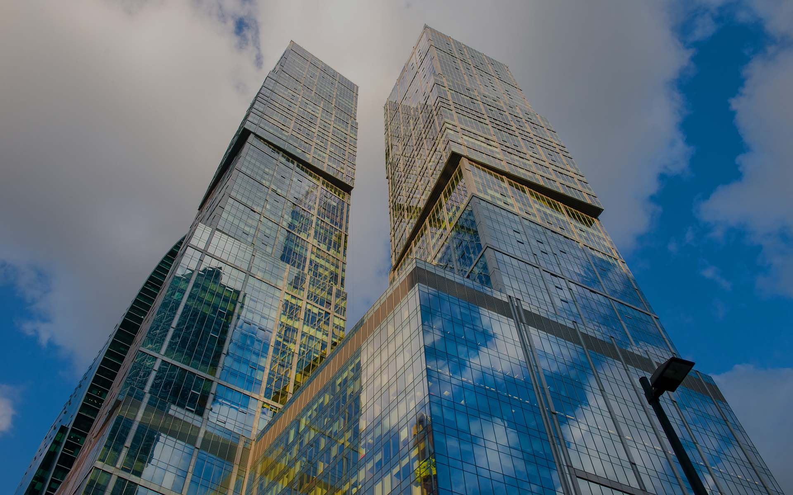

Город столиц
Две башни — одна судьба, символ мощи и устремленности России

Характеристики
- Высота (башня Москва):302 м
- Высота (башня Санкт-Петербург):257 м
- Годы строительства:2005-2009
- Девелопер:Capital Group
- Застройщик:Capital Group
- Общая площадь:288 680 м²
- Скорость лифтов:7 м/с
- Этажей (башня Москва):76
- Этажей (башня Санкт-Петербург):65
- Апартаменты:101 000 м²
- Участок:9
Об архитектуре
«Город столиц» — архитектурный комплекс, вызывающий восхищение. Состоящий из двух высотных зданий: «Москва» и «Санкт-Петербург», он подчеркивает мощь и непоколебимость России, стремление страны к развитию и сотрудничеству с другими странами мира. Архитектура каждой из башен впечатляет: дома состоят из блоков, которые смещены относительно друг друга.
В конструктиве высоток использован принцип «воздушного фундамента». Если посмотрите на здание, то увидите, что оно состоит из кубиков. Они неровно стоят друг на друге. Это не просто оригинальное архитектурное решение. У каждого из «кубиков» — собственный фундамент, который на специальных элементах – аутригерах, опирается на ядро жесткости, тем самым поддерживая следующий.
Говоря проще — эти кубы держат железобетонные конструкции, которые служат для распределения нагрузки с верхних этажей на своеобразный каркас жесткости — ядро. Они дают зданиям дополнительную устойчивость. Небоскребы, для проверки устойчивости при ветровых нагрузках, проходили специальное обследование: конструкцию проекта в уменьшенном масштабе «продували» в специальных лабораториях. «Воздушные кубы» — это «изюминка» здания.
В «Городе столиц» установлены двухэтажные лифты серии Double Deck. У них сдвоенные кабины: верхняя пассажирская и нижняя грузовая. Преимущество таких лифтов в том, что в одной шахте по сути есть сразу два лифта разного предназначения. Больше нигде в деловом центре «Москва-Сити» подобных лифтов нет.
Окна проходили краш-тесты. По ним можно ударять рукой, ногой, мебелью — они не бьются. Это триплексные стеклопакеты, закаленное стекло, плюс ко всему есть дополнительное пленочное покрытие.
Как добраться
📍 Адрес: Пресненская набережная, 8, Москва
🚇 Метро: Выставочная, Международная, Деловой центр